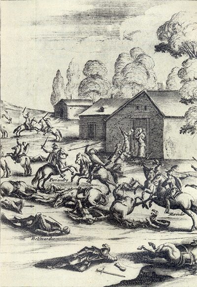
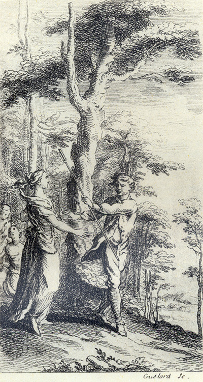
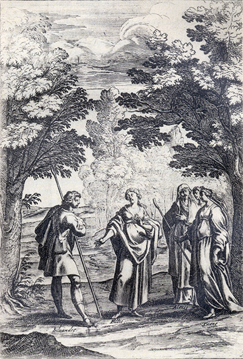
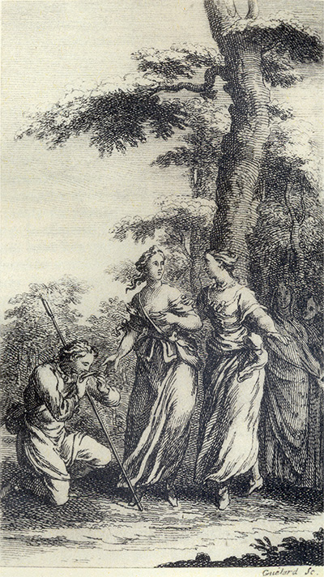
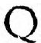
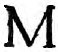
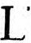
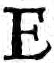
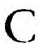
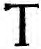

Tableaux analytiquesIndex des noms propres Tableaux des personnages Répertoire
(autres noms propres)Glossaire Dictionnaire des fréquences Notes
Topographie du sitePlan du site Index de l'apparat critique Bibliographie Liens externes Liens vers Gallica
SupportGuide de la navigation FAQ Nouveautés Remerciements Auteur du site
Effacer les témoins
(cookies)X
Accueil Préface Choix éditoriaux Les Quatrièmes parties Les
IntroductionsAstréesposthumes L'Édition de Vaganay Présentation des textes Pleins feux sur
L'Astrée
Lecture de
L'AstréeI
Éd. de référenceepartie 1621 II
epartie 1621 III
epartie 1621 IV
epartie 1624
I
Éd. préliminaireepartie 1607 II
epartie 1610 III
epartie 1619
Éd. fonctionnelleavec gravuresI
epartie II
epartie III
epartie IV
epartie
en Word
Éd. téléchargeableen Word
Chronologie historique
Résumédes intrigues
APPARAT CRITIQUEÉvolution de
Le romanL'AstréeVariantes confrontées Variantes, I
epartie Variantes, II
epartie Variantes, III
epartie Analyse des illustrations Parallèles suggérés Résumé des intrigues Chronologie historique Témoignages Du Crozet Sorel Guéret Poèmes de Lingendes
Biographie Biographes, critiques Événements Généalogie Testament Inventaire Héritages Poèmes Épîtres Lettres Remarques
Le romanciersur Malherbe
Bibliographie Liens externes Liens vers Gallica Cartothèque Galerie de portraits Film d'Eric Rohmer Partitions d'A. Naigeon Photos du Forez
Ressources

«
@
»
X

avancéeRecherche ciblée Fils d'Arianne Hyperbase (É. Brunet) Accès aux pages/folios Concordances-Vaganay
police condenséeL'AstréeRésumé du roman Chronologie historique Choix éditoriaux Présentation des textes Évolution Illustrations
 Annexe
Annexe

L'Astrée
L'Astrée fonctionnelle
L'AstréeLes Quatrièmes parties

Livre 2

Livre 4

L'Astrée d'Honoré d'Urfé
Quatrième partie
Livre 3
1 Dorinde
2 Laonice Tircis
3 Silvandre

Dorinde est à la porte de la cabane.
Périandre, Mérindor, Bellimarte et leurs compagnons s'opposent aux soldats de Gondebaud.
« Mais comme il advient presque toujours qu'en un combat les uns par leur mort achètent le prix de la victoire à leurs compagnons, aussi advint-il ... » (IV, 3, 376).
L'Astrée IV. Édition Vaganay**, 1925, IV, 4.Dorinde est à la porte de la cabane.
Périandre, Mérindor, Bellimarte et leurs compagnons s'opposent aux soldats de Gondebaud.
« Mais comme il advient presque toujours qu'en un combat les uns par leur mort achètent le prix de la victoire à leurs compagnons, aussi advint-il ... » (IV, 3, 376).
(Voir Illustrations)
Laonice a confié à Tircis ses mensonges. Diane et Phillis les entendent.
« À ce mot, s'en retournant au grand pas d'où il venait,
[Tircis] laissa Laonice si étonnée de ses reproches ... » (IV, 3, 553).
IV. Édition Vaganay**, 1925, IV, 5.
L'AstréeL'Astrée
Laonice a confié à Tircis ses mensonges. Diane et Phillis les entendent.
« À ce mot, s'en retournant au grand pas d'où il venait,
[Tircis] laissa Laonice si étonnée de ses reproches ... » (IV, 3, 553).
(Voir Illustrations)

Gravure signée Guélard.
Laonice a confié à Tircis ses mensonges. Diane et Phillis les entendent.
« Va, lui dit-il, quatrième Mégère » (IV, 3, 552}.
IV. Édition Vaganay**, 1925, IV, 5.
L'AstréeL'Astrée
Gravure signée Guélard.
Laonice a confié à Tircis ses mensonges. Diane et Phillis les entendent.
« Va, lui dit-il, quatrième Mégère » (IV, 3, 552}.
(Voir Illustrations)

Sous les yeux de Diane, Astrée et Alexis, Phillis tend à Silvandre le bracelet de Diane :
« Tenez, Silvandre, continua-t-elle lui rendant le bracelet qu'elle lui avait ôté,
je le vous rends »
(IV, 3, 607).
IV. Édition Vaganay**, 1925, IV, 6.
L'AstréeL'Astrée
Sous les yeux de Diane, Astrée et Alexis, Phillis tend à Silvandre le bracelet de Diane :
« Tenez, Silvandre, continua-t-elle lui rendant le bracelet qu'elle lui avait ôté,
je le vous rends »
(IV, 3, 607).
(Voir Illustrations)

Gravure signée Guélard.
Phillis rend à Silvandre le bracelet de Diane.
« Silvandre alors mettant un genou en terre, le reçut en le baisant plus de cent fois »
(IV, 3, 607).
IV. Édition Vaganay**, 1925, IV, 6.
L'AstréeL'Astrée
Gravure signée Guélard.
Phillis rend à Silvandre le bracelet de Diane.
« Silvandre alors mettant un genou en terre, le reçut en le baisant plus de cent fois »
(IV, 3, 607).
(Voir Illustrations)
SONNET,
qu'il n'a point changé.
QUe j'aime autre que vous, ni que jamais mon cœurAit souffert que les yeux de quelque autre bergère,L'aient pu réchauffer d'une flamme étrangère,Ni qu'un second amour en ait été vainqueur,S'il est ainsi, grands Dieux ! armez-vous de rigueur,Vengez
la trahison d'une âme si légère,Et faites voir à tous que, d'un esprit moqueur,Vous savez découvrir l'amitié mensongère.
Mais vous ne punissez, ce
dit-on, les serments
η
Quoique traîtres et faux, des parjures amants.
Que votre bras, grands Dieux, toutefois me punisse.
Si j'ai changé d'amour je ne suis plus amant
Mais plutôt un trompeur digne de châtiment,
Par ainsi qu'en la vôtre éclaire ma justice !
PLAINTE
η
I.
QUi donnera des larmes à mes yeux Pour pleurer ma fortune,Et qui fera que ma voix n'importune Les hommes ni les Dieux, En se plaignant sans cesse Du malheur qui m'oppresse ?
II.
Sortez, hélas, sortez, mes tristes pleurs
η,
Sortez à pleine bonde,Et vous, ma voix, remplissant tout le monde De mes tristes clameurs, Faites partout entendre Le malheur de Silvandre.
III.
Mais, eh ! pourquoi mes pleurs sortirez-vous,
Ni vous ma voix encore ?
Pourrait-il bien, ce mal qui me dévore,
En devenir plus doux ?
Ah ! trompeuse espérance
η,
Il ne faut que j'y pense.
IV.
Rien que la mort me peut soulager :
Ainsi le Ciel l'ordonne.
Le Ciel cruel qui ne veut que personne
Mon mal puisse alléger,
Ni que rien m'en délivre,
Sinon cessant de vivre.
V.
Éloigne donc, Silvandre, loin de toi,
Cette fâcheuse vie.
Le seul
moment qui te l'aura ravie
Sera chéri de toi,
Aurions-nous le courage
De vivre davantage.
VI.
Avant le mal, si le mourir est beau,
Pourquoi la destinée
N'a-t-elle point notre fin terminée
Dedans
notre tombeau,
Sans filer
une vie
De tant de maux suivie
η ?
VII.
Silvandre, heureux plus qu'on ne peut penser,
Si seulement d'une heure
De ton trépas le malheur que je pleure,
J'eusse vu devancer,
Ou bien d'une journée
Trompant ta destinée !
VIII.
Mais ce désir est inutile enfin,
La pierre en est jetée
η,
Et dans le Ciel l'influence arrêtée
De ton cruel destin,
Veut que sans allégeance
Tout désastre t'offense.
SONNET.
Il ne veut plus espérer
η.
QUe nul bien désormais ne flatte ma pensée,Et que tous mes espoirs soient mis dans le cercueil,Qu'une éternelle nuit accompagne mon œil,Et soit en moi la joie à jamais effacée.
Pleurez, mes tristes yeux
η, votre gloire passée.
Soient de gouttes de sang les larmes de mon deuil.
Oublions pour toujours le favorable accueil
Dont la fortune avait notre amour commencée.
Fuyez bien loin de moi, désir de quelque bien,Puisqu'entre les mortels je n'espère plus rienQue de mourir enfin oppressé de tristesse.
Mais pourquoi faudrait il quelque chose espérer
Si même il n'est permis au malheur qui m'oppresse
D'oser, à tant de maux, une fin désirer ?
SONNET.
Il a plus d'amour qu'elle n'a de
cruauté.
MAis, mon Dieu, que je l'aime ! et, mon Dieu, que de peine
Je supporte en aimant sa cruelle beauté !
Fut-il jamais Amour plus plein de loyauté ?
Fut-il jamais, Ô Dieu, beauté plus inhumaine ?
Plus je vais l'adorant
η d'une âme toute pleine
Et d'amour et de feux, et plus sa cruauté
Augmente de rigueur par quelque nouveauté,
Comme si l'adorer faisait naître sa haine.
Dieu ! que ne fais-je point pour surmonter son cœur ?
Que ne fait-elle aussi pour montrer sa rigueur,
Qu'égale à mon amour elle voudrait bien rendre ?
Mais, cruelle beauté ! vous n'y parviendrez pas.
Votre rigueur n'ira que jusqu'à mon trépas,
Et mon amour encore brûlera dans ma cendre.
SONNET.
L'On me va reprochant que souffrir tel outrage,
C'est être sans esprit, ou sans nul sentiment,
Et qu'il faut bien aimer, mais qu'il faut que l'Amant
Retienne avec l'amour quelque peu de courage ;
Que d'endurer ainsi, c'est plutôt témoignage
D'un esprit abattu que d'amour véhément,
Qu'il se faut bien donner, mais non pas tellement
Qu'enfin ce don se change en un cruel servage.
Offensé, je réponds : - Ces maximes de Cour
Que, déçus, vous tenez pour maximes d'amour,
Montrent vos passions être bien imparfaites.
Il faut, pour bien aimer, aimer ainsi que moi :
N'aimer que pour aimer
η tout d'amour et de foi,
Et c'est trahir Amour d'aimer comme vous faites.
- Ah ! mon frère, interrompit incontinent le premier qui avait parlé, vous avez maintenant raison en ce que vous dites ! Car, véritablement, qui aime pour autre dessein que pour seulement aimer, il abuse du nom d'Amour, et profane indignement une divinité
choir sans y penser, et le dépliant tous deux voyant qu'il était écrit, ils prirent le mieux qu'ils purent la clarté de la Lune, et lurent avec quelque difficulté ces vers
η :
SONNET.
Elle seule digne d'elle.
ELle aime enfin, quoi qu'elle sache dire,
Cette arrogante et trop fière beauté !
Mais pour punir sa feinte cruauté,
D'un feu nouveau se produit son martyre.
Dans son miroir
η elle-même s'admire,
Ainsi le Ciel venge ma loyauté,
Et s'admirant, étrange nouveauté !
D'un vain Amour se brûle et se désire.
Elle ne croit, l'orgueilleuse qu'elle est,
Rien digne d'elle, elle seule se plaît,
Et ses amours en soi-même elle enserre.
Mais, Glorieuse, enfin tu te déçois :
Cette beauté qu'en ce miroir tu vois
N'est rien qu'une ombre, et n'est que dans un verre.
COmme un Guerrier nourri dans les alarmes,
Quand l'ennemi n'est point encore pressant,
En ce miroir vous allez aiguisant
η
De vos beautés les invincibles armes.
Lorsqu'à vos yeux vous ajoutez des charmes,
En cent façons leurs attraits déguisant,
Ma mort je vais moi-même autorisant
η,
Car ce miroir
η n'est fait que de mes larmes. Larmes, hélas ! qu'Amour change au
cristalDe ce miroir
η pour marque de mon mal,
Et qu'à vos yeux je présente, fidèle.
Jugez au moins, puisque dans mes tourments
Je vous fais voir si parfaite et si belle,
Que vous seriez dans mes contentements
η !
ORACLE
η.
TOn présent déplaisir bientôt se finira,
Mais celle que tu veux Paris l'épousera.
Et tu ne dois prétendre
D'accomplir tes désirs qu'en la mort de Silvandre.
Ton présent déplaisir bientôt se finira
Mais celle que tu veux Paris l'épousera.
Et tu ne dois prétendre
D'accomplir tes désirs qu'en la mort de Silvandre.
Fin du troisième livre.
Livre 2
Livre 4
Référence électronique :
document.write('"'+document.title.substr(0, document.title.indexOf("-")-1)+'". '+"Dernière mise à jour : "+ExtractDate(document.lastModified)+".")Deux visages de L'Astrée.
©2005-2020 E. Henein.
URL :
var today = new Date();
document.write(document.URL +
"<br>Consulté le : " + today.toLocaleDateString("fr-FR") + ".");
var _gaq = _gaq || [];
_gaq.push(['_setAccount', 'UA-19288475-1']);
_gaq.push(['_trackPageview']);
(function() {
var ga = document.createElement('script'); ga.type = 'text/javascript'; ga.async = true;
ga.src = ('https:' == document.location.protocol ? 'https://ssl' : 'http://www') + '.google-analytics.com/ga.js';
var s = document.getElementsByTagName('script')[0]; s.parentNode.insertBefore(ga, s);
})();
Deux visages de L'Astrée.
©2005-2019 Eglal Henein. Creative Commons 4 
Édition critique de la première partie de L'Astrée (1607, 1621)
mise en ligne le 9 avril 2007
Édition critique de la deuxième partie de L'Astrée (1610, 1621)
mise en ligne le 10 octobre 2010
Édition critique de la troisième partie de L'Astrée (1619, 1621)
mise en ligne le 1er novembre 2014
Édition critique de la quatrième partie de L'Astrée (1624)
mise en ligne le 15 janvier 2019
document.write("Dernière mise à jour : "+ExtractDate(document.lastModified))